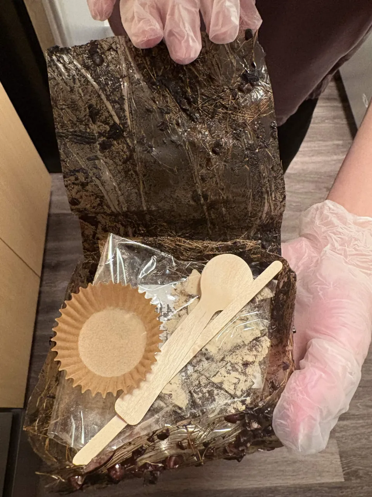

01Professional · ongoing
Boston Bilingual Pioneer Media
Interactive Learning & Game-Based Education
- Role
- Project Lead / Game Designer / 3D Artist
- Period
- 03/2026 – Present

[ Portfolio · 2026 ]
Game DesignerPlayer Experience ResearcherArtist
Game design, player-experience research and original 2D/3D art — shaped by a background in psychology.
[ 00 ] Index
Game design, research, art and community work are presented together, with each project labelled by type and status.
[ 01 ] Current work
01Professional · ongoing
Interactive Learning & Game-Based Education

02Client project · in development
3D Action Roguelike — Concept Art & UI Design

03Academic research · ongoing
Child-Friendly EEG Adaptation

04Team project · in development
Biomaterial Design & Educational Tabletop Game
[ 02 ] Practice map
Each discipline is listed with the projects and roles on this site that show it.
| Discipline | Evidence |
|---|---|
| 01Game & Systems Design | Boston Bilingual Pioneer MediaSchooliveCocoa QuestElixir Nomad |
| 02Gameplay Design | Lunch HoursCena FlorisCOWorkerNight, Adios |
| 03Player Experience Research | 3D Astronomy think-aloud studyBeforeHello usability feedback |
| 04Psychology | B.A. PsychologyQLAB — Neural EntrainmentPeking University Sixth Hospital |
| 05HCI & UI/UX | BeforeHelloCombat UI — DeeplightHEYBOX wiki structure |
| 062D & 3D Art | Generate / Deeplight GamesDueling Duet3D models & environments |
| 07Educational Technology | Axis AI platformEchoes of Chinese CharactersSchoolive platform |
| 08Communities & Content | NetEase Blizzard China creatorBilibili talk localisationHEYBOX |
[ 04 ] Community
20K+Douyin followers
10Mviews on one video
NetEase Blizzard China creator partnership · 01/2024 – Present